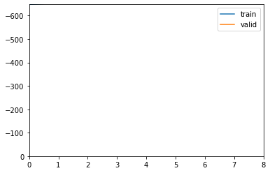

from meteo_imp.utils import *Implement Kalman model using FastAI
need to implement custom data preparation pipeline and loss function
Data Preparation
The aim of the data preparation pipeline is to: - take the original time series and split it into time blocks - for each block generate a random gap (need to figure out the properties of the gap) - split some time blocks for testing
the input of the pipeline is: - a dataframe containing all observations
the input of the model is: - observed data (potentially containing NaN where data is missing) - missing data mask (which is telling where the data is missing) - the data needs to be standardized
reset_seed()import torchfrom fastai.tabular.core import *
from fastai.data.core import *@cache_disk("full_hai")
def load_data():
return read_fluxnet_csv(hai_path, None)
hai = load_data()Blocks
the first step is to transfrom the original dataframe into blocks of a specified block_len
two different strategies are possible:
- contigous blocks
- random block in the dataframe
BlockDfTransform
BlockDfTransform (df, block_len=200)
divide timeseries DataFrame into blocks
m = BlockDfTransform(hai[:100], 10)mBlockDfTransform:
encodes: (int,object) -> encodes
decodes: m(1)| TA | SW_IN | VPD | |
|---|---|---|---|
| time | |||
| 2000-01-01 05:30:00 | -0.23 | 0.00 | 0.138 |
| 2000-01-01 06:00:00 | -0.23 | 0.00 | 0.122 |
| 2000-01-01 06:30:00 | -0.22 | 0.00 | 0.098 |
| 2000-01-01 07:00:00 | -0.24 | 0.00 | 0.066 |
| 2000-01-01 07:30:00 | -0.23 | 0.00 | 0.044 |
| 2000-01-01 08:00:00 | -0.22 | 0.00 | 0.026 |
| 2000-01-01 08:30:00 | -0.19 | 0.45 | 0.016 |
| 2000-01-01 09:00:00 | -0.14 | 3.70 | 0.010 |
| 2000-01-01 09:30:00 | -0.03 | 7.26 | 0.006 |
| 2000-01-01 10:00:00 | 0.04 | 12.24 | 0.006 |
m(9)| TA | SW_IN | VPD | |
|---|---|---|---|
| time | |||
| 2000-01-02 21:30:00 | 0.97 | 0.0 | 0.192 |
| 2000-01-02 22:00:00 | 0.85 | 0.0 | 0.149 |
| 2000-01-02 22:30:00 | 0.77 | 0.0 | 0.112 |
| 2000-01-02 23:00:00 | 0.63 | 0.0 | 0.075 |
| 2000-01-02 23:30:00 | 0.52 | 0.0 | 0.038 |
| 2000-01-03 00:00:00 | 0.48 | 0.0 | 0.021 |
| 2000-01-03 00:30:00 | 0.41 | 0.0 | 0.013 |
| 2000-01-03 01:00:00 | 0.29 | 0.0 | 0.004 |
| 2000-01-03 01:30:00 | 0.31 | 0.0 | 0.000 |
| 2000-01-03 02:00:00 | 0.42 | 0.0 | 0.000 |
Gaps
adds a mask which includes a random gap
def _make_random_gap(
gap_length: int, # The length of the gap
total_length: int, # The total number of observations
gap_start: int = None # Optional start of gap
): # (total_length) array of bools to indicicate if the data is missing or not
"Add a continous gap of ginve length at random position"
if(gap_length >= total_length):
return np.repeat(True, total_length)
gap_start = np.random.randint(total_length - gap_length) if gap_start is None else gap_start
return np.hstack([
np.repeat(False, gap_start),
np.repeat(True, gap_length),
np.repeat(False, total_length - (gap_length + gap_start))
])AddGapTransform
AddGapTransform (variables, gap_length)
Adds a random gap to a TimeSTensor
a_gap = AddGapTransform(['TA', 'VPD'], 5)
a_gapAddGapTransform:
encodes: (DataFrame,object) -> encodes
decodes: a_gap(m(1))MaskedDf(data= TA SW_IN VPD
time
2000-01-01 05:30:00 -0.23 0.00 0.138
2000-01-01 06:00:00 -0.23 0.00 0.122
2000-01-01 06:30:00 -0.22 0.00 0.098
2000-01-01 07:00:00 -0.24 0.00 0.066
2000-01-01 07:30:00 -0.23 0.00 0.044
2000-01-01 08:00:00 -0.22 0.00 0.026
2000-01-01 08:30:00 -0.19 0.45 0.016
2000-01-01 09:00:00 -0.14 3.70 0.010
2000-01-01 09:30:00 -0.03 7.26 0.006
2000-01-01 10:00:00 0.04 12.24 0.006, mask= TA SW_IN VPD
time
2000-01-01 05:30:00 True True True
2000-01-01 06:00:00 True True True
2000-01-01 06:30:00 True True True
2000-01-01 07:00:00 False True False
2000-01-01 07:30:00 False True False
2000-01-01 08:00:00 False True False
2000-01-01 08:30:00 False True False
2000-01-01 09:00:00 False True False
2000-01-01 09:30:00 True True True
2000-01-01 10:00:00 True True True)m_df = a_gap(m(3))m_df.data| TA | SW_IN | VPD | |
|---|---|---|---|
| time | |||
| 2000-01-01 15:30:00 | 0.52 | 8.09 | 0.000 |
| 2000-01-01 16:00:00 | 0.57 | 6.37 | 0.000 |
| 2000-01-01 16:30:00 | 0.73 | 1.72 | 0.000 |
| 2000-01-01 17:00:00 | 0.77 | 0.06 | 0.000 |
| 2000-01-01 17:30:00 | 0.84 | 0.00 | 0.000 |
| 2000-01-01 18:00:00 | 0.99 | 0.00 | 0.000 |
| 2000-01-01 18:30:00 | 1.35 | 0.00 | 0.000 |
| 2000-01-01 19:00:00 | 1.86 | 0.00 | 0.002 |
| 2000-01-01 19:30:00 | 2.01 | 0.00 | 0.009 |
| 2000-01-01 20:00:00 | 2.07 | 0.00 | 0.014 |
m_df.mask| TA | SW_IN | VPD | |
|---|---|---|---|
| time | |||
| 2000-01-01 15:30:00 | False | True | False |
| 2000-01-01 16:00:00 | False | True | False |
| 2000-01-01 16:30:00 | False | True | False |
| 2000-01-01 17:00:00 | False | True | False |
| 2000-01-01 17:30:00 | False | True | False |
| 2000-01-01 18:00:00 | True | True | True |
| 2000-01-01 18:30:00 | True | True | True |
| 2000-01-01 19:00:00 | True | True | True |
| 2000-01-01 19:30:00 | True | True | True |
| 2000-01-01 20:00:00 | True | True | True |
MaskedDf.tidy
MaskedDf.tidy ()
m_df.tidy()| time | variable | value | is_present | |
|---|---|---|---|---|
| 0 | 2000-01-01 15:30:00 | TA | 0.520 | False |
| 1 | 2000-01-01 16:00:00 | TA | 0.570 | False |
| 2 | 2000-01-01 16:30:00 | TA | 0.730 | False |
| 3 | 2000-01-01 17:00:00 | TA | 0.770 | False |
| 4 | 2000-01-01 17:30:00 | TA | 0.840 | False |
| 5 | 2000-01-01 18:00:00 | TA | 0.990 | True |
| 6 | 2000-01-01 18:30:00 | TA | 1.350 | True |
| 7 | 2000-01-01 19:00:00 | TA | 1.860 | True |
| 8 | 2000-01-01 19:30:00 | TA | 2.010 | True |
| 9 | 2000-01-01 20:00:00 | TA | 2.070 | True |
| 10 | 2000-01-01 15:30:00 | SW_IN | 8.090 | True |
| 11 | 2000-01-01 16:00:00 | SW_IN | 6.370 | True |
| 12 | 2000-01-01 16:30:00 | SW_IN | 1.720 | True |
| 13 | 2000-01-01 17:00:00 | SW_IN | 0.060 | True |
| 14 | 2000-01-01 17:30:00 | SW_IN | 0.000 | True |
| 15 | 2000-01-01 18:00:00 | SW_IN | 0.000 | True |
| 16 | 2000-01-01 18:30:00 | SW_IN | 0.000 | True |
| 17 | 2000-01-01 19:00:00 | SW_IN | 0.000 | True |
| 18 | 2000-01-01 19:30:00 | SW_IN | 0.000 | True |
| 19 | 2000-01-01 20:00:00 | SW_IN | 0.000 | True |
| 20 | 2000-01-01 15:30:00 | VPD | 0.000 | False |
| 21 | 2000-01-01 16:00:00 | VPD | 0.000 | False |
| 22 | 2000-01-01 16:30:00 | VPD | 0.000 | False |
| 23 | 2000-01-01 17:00:00 | VPD | 0.000 | False |
| 24 | 2000-01-01 17:30:00 | VPD | 0.000 | False |
| 25 | 2000-01-01 18:00:00 | VPD | 0.000 | True |
| 26 | 2000-01-01 18:30:00 | VPD | 0.000 | True |
| 27 | 2000-01-01 19:00:00 | VPD | 0.002 | True |
| 28 | 2000-01-01 19:30:00 | VPD | 0.009 | True |
| 29 | 2000-01-01 20:00:00 | VPD | 0.014 | True |
plot_rug(m_df.tidy())/home/simone/.local/lib/python3.10/site-packages/altair/utils/core.py:317: FutureWarning: iteritems is deprecated and will be removed in a future version. Use .items instead.
for col_name, dtype in df.dtypes.iteritems():def plot_points(df, y_label = "", sel = def_selection(), props = {}):
return alt.Chart(df).mark_point(
color='black',
strokeWidth = 1,
fillOpacity = 1
).encode(
x = alt.X("time", axis=alt.Axis(domain=False, labels = False, ticks=False, title=None)),
y = alt.Y("value", title = y_label, scale=alt.Scale(zero=False)),
fill= alt.Fill("is_present", scale = alt.Scale(range=["black", "#ffffff00"]),
legend = alt.Legend(title =["Observed data"])),
shape = "is_present",
)plot_points(m_df.tidy())/home/simone/.local/lib/python3.10/site-packages/altair/utils/core.py:317: FutureWarning: iteritems is deprecated and will be removed in a future version. Use .items instead.
for col_name, dtype in df.dtypes.iteritems():plot_line(m_df.tidy())/home/simone/.local/lib/python3.10/site-packages/altair/utils/core.py:317: FutureWarning: iteritems is deprecated and will be removed in a future version. Use .items instead.
for col_name, dtype in df.dtypes.iteritems():plot_variable(m_df.tidy(), "TA", title="title TA")/home/simone/.local/lib/python3.10/site-packages/altair/utils/core.py:317: FutureWarning: iteritems is deprecated and will be removed in a future version. Use .items instead.
for col_name, dtype in df.dtypes.iteritems():MaskedDf.show
MaskedDf.show (ax=None, ctx=None, n_cols:int=3, bind_interaction:bool=True, props:dict=None)
| Type | Default | Details | |
|---|---|---|---|
| ax | NoneType | None | |
| ctx | NoneType | None | |
| n_cols | int | 3 | |
| bind_interaction | bool | True | Whether the sub-plots for each variable should be connected for zooming/panning |
| props | dict | None | additional properties (eg. size) for altair plot |
| Returns | Chart |
m_df.show()/home/simone/.local/lib/python3.10/site-packages/altair/utils/core.py:317: FutureWarning: iteritems is deprecated and will be removed in a future version. Use .items instead.
for col_name, dtype in df.dtypes.iteritems():a_gap(m(3)).show()/home/simone/.local/lib/python3.10/site-packages/altair/utils/core.py:317: FutureWarning: iteritems is deprecated and will be removed in a future version. Use .items instead.
for col_name, dtype in df.dtypes.iteritems():a_gap(m(4)).show()/home/simone/.local/lib/python3.10/site-packages/altair/utils/core.py:317: FutureWarning: iteritems is deprecated and will be removed in a future version. Use .items instead.
for col_name, dtype in df.dtypes.iteritems():idx = L(*m(1).columns).argwhere(lambda x: x in ['TA','SW_IN'])mask = np.ones_like(m(1), dtype=bool)maskarray([[ True, True, True],
[ True, True, True],
[ True, True, True],
[ True, True, True],
[ True, True, True],
[ True, True, True],
[ True, True, True],
[ True, True, True],
[ True, True, True],
[ True, True, True]])gap = _make_random_gap(2, 10, 2)gaparray([False, False, True, True, False, False, False, False, False,
False])np.argwhere(gap)array([[2],
[3]])mask[np.argwhere(gap), idx] = Falsemaskarray([[ True, True, True],
[ True, True, True],
[False, False, True],
[False, False, True],
[ True, True, True],
[ True, True, True],
[ True, True, True],
[ True, True, True],
[ True, True, True],
[ True, True, True]])mask[gap]array([[False, False, True],
[False, False, True]])To Tensor
MaskedTensor
MaskedTensor (x=None, *rest)
A tuple with elementwise ops and more friendly init behavior
MaskedDf2Tensor
MaskedDf2Tensor (enc=None, dec=None, split_idx=None, order=None)
A transform that always take tuples as items
tfms = TfmdLists([1,2,3], [BlockDfTransform(hai, 10), AddGapTransform(['TA','SW_IN'], 2), MaskedDf2Tensor ])tfms[1](tensor([[1.0000e-01, 1.6510e+01, 6.0000e-03],
[1.8000e-01, 2.4730e+01, 1.1000e-02],
[2.1000e-01, 4.7420e+01, 1.9000e-02],
[2.3000e-01, 2.2050e+01, 1.4000e-02],
[3.3000e-01, 1.8860e+01, 8.0000e-03],
[4.1000e-01, 2.1100e+01, 6.0000e-03],
[4.4000e-01, 2.8870e+01, 0.0000e+00],
[4.8000e-01, 2.4220e+01, 0.0000e+00],
[4.9000e-01, 2.4350e+01, 0.0000e+00],
[5.1000e-01, 1.5680e+01, 0.0000e+00]]),
tensor([[False, False, True],
[False, False, True],
[ True, True, True],
[ True, True, True],
[ True, True, True],
[ True, True, True],
[ True, True, True],
[ True, True, True],
[ True, True, True],
[ True, True, True]]))type(tfms[0])__main__.MaskedTensorNormalize
get_stats
get_stats (df)
NormalizeMasked
NormalizeMasked (mean=None, std=None, axes=(0,))
Normalize/denorm MaskedTensor column-wise
b = TfmdLists([0,1], [BlockDfTransform(hai, 10), AddGapTransform(['TA','SW_IN'], 2), MaskedDf2Tensor, NormalizeMasked(*get_stats(hai))]).dataloaders(bs=2).one_batch()[0]b[0].mean(0)tensor([-1.1083, -0.5929, -0.7457], device='cuda:0')b[1].mean(0)tensor([-1.0730, -0.5813, -0.7617], device='cuda:0')b.std(axis=(0,1))tensor([0.0232, 0.0154, 0.0128], device='cuda:0')Pipeline
block_len = 10
block_ids = list(range(0, (len(hai) // block_len) - 1))[:10]
gap_len = 2imp_pipeline
imp_pipeline (df, block_len, gap_len)
pipeline, block_ids = imp_pipeline(hai, block_len, gap_len)pipeline[BlockDfTransform:
encodes: (int,object) -> encodes
decodes: ,
AddGapTransform:
encodes: (DataFrame,object) -> encodes
decodes: ,
__main__.MaskedDf2Tensor,
NormalizeMasked:
encodes: (MaskedTensor,object) -> encodes
(object,object) -> encodes
decodes: (ListNormal,object) -> decodes]Dataloader
random splitter for validation/training set
reset_seed()splits = RandomSplitter()(block_ids)Repeat twice the pipeline since is the same pipeline both for training data and for labels
ds = Datasets(block_ids, [pipeline, pipeline], splits=splits)dls = ds.dataloaders(bs=1)dls.devicedevice(type='cuda', index=0)dls.one_batch()((tensor([[[ 0.1989, 0.0843, 0.1587],
[ 0.1837, -0.2318, 0.0536],
[ 0.1497, -0.4158, -0.0613],
[ 0.1017, -0.5118, -0.1707],
[ 0.0487, -0.5848, -0.2554],
[-0.0106, -0.5929, -0.3399],
[-0.0510, -0.5929, -0.3753],
[-0.0838, -0.5929, -0.4113],
[-0.1166, -0.5929, -0.4420],
[-0.1746, -0.5929, -0.4591]]], device='cuda:0'),
tensor([[[ True, True, True],
[ True, True, True],
[ True, True, True],
[ True, True, True],
[ True, True, True],
[False, False, True],
[False, False, True],
[ True, True, True],
[ True, True, True],
[ True, True, True]]], device='cuda:0')),
(tensor([[[ 0.1989, 0.0843, 0.1587],
[ 0.1837, -0.2318, 0.0536],
[ 0.1497, -0.4158, -0.0613],
[ 0.1017, -0.5118, -0.1707],
[ 0.0487, -0.5848, -0.2554],
[-0.0106, -0.5929, -0.3399],
[-0.0510, -0.5929, -0.3753],
[-0.0838, -0.5929, -0.4113],
[-0.1166, -0.5929, -0.4420],
[-0.1746, -0.5929, -0.4591]]], device='cuda:0'),
tensor([[[False, False, True],
[False, False, True],
[ True, True, True],
[ True, True, True],
[ True, True, True],
[ True, True, True],
[ True, True, True],
[ True, True, True],
[ True, True, True],
[ True, True, True]]], device='cuda:0')))@typedispatch
def show_batch(x: MaskedTensor, y, samples, ctxs=None, max_n=6):
print(x)dls.show_batch()(tensor([[[-0.8939, -0.5929, -0.5592],
[-0.9482, -0.5929, -0.6807],
[-0.9242, -0.5929, -0.7212],
[-0.9065, -0.5929, -0.7434],
[-0.8523, -0.5929, -0.7389],
[-0.8195, -0.5929, -0.7302],
[-0.8056, -0.5929, -0.7476],
[-0.7904, -0.5929, -0.7560],
[-0.7576, -0.5929, -0.7590],
[-0.7387, -0.5929, -0.7606]]]), tensor([[[ True, True, True],
[False, False, True],
[False, False, True],
[ True, True, True],
[ True, True, True],
[ True, True, True],
[ True, True, True],
[ True, True, True],
[ True, True, True],
[ True, True, True]]]))dls._types{tuple: [{__main__.MaskedTensor: [torch.Tensor, torch.Tensor]},
{__main__.MaskedTensor: [torch.Tensor, torch.Tensor]}]}dls.show_batch()(tensor([[[-0.0913, 0.0613, -0.4278],
[-0.0447, 0.4846, -0.4010],
[ 0.0109, 0.6791, -0.3737],
[ 0.1080, 0.7323, -0.2334],
[ 0.1850, 0.7927, -0.1441],
[ 0.2342, 0.4668, -0.0913],
[ 0.2304, 0.5042, -0.1041],
[ 0.2128, 0.2841, -0.1384],
[ 0.1749, -0.0679, -0.2201],
[ 0.1598, -0.1345, -0.2510]]]), tensor([[[ True, True, True],
[False, False, True],
[False, False, True],
[ True, True, True],
[ True, True, True],
[ True, True, True],
[ True, True, True],
[ True, True, True],
[ True, True, True],
[ True, True, True]]]))Datasetsfastai.data.core.Datasetsmake_dataloader
make_dataloader (df, block_len, gap_len, bs=10)
dls = make_dataloader(hai, 200, 10)dls.one_batch()[0][0].shapetorch.Size([10, 200, 3])dls = dls.cpu()Model
Forward Function
in order to the a pytorch module we need a forward method to the kalman filter
ListNormal
ListNormal (x=None, *rest)
A tuple with elementwise ops and more friendly init behavior
KalmanFilter.forward
KalmanFilter.forward (masked_data:__main__.MaskedTensor)
Defines the computation performed at every call.
Should be overridden by all subclasses.
.. note:: Although the recipe for forward pass needs to be defined within this function, one should call the :class:Module instance afterwards instead of this since the former takes care of running the registered hooks while the latter silently ignores them.
input = dls.one_batch()[0]
target = dls.one_batch()[1]model = KalmanFilter(n_dim_state = hai.shape[1], n_dim_obs=hai.shape[1])model.state_dict()OrderedDict([('transition_matrices',
tensor([[1., 0., 0.],
[0., 1., 0.],
[0., 0., 1.]])),
('transition_offsets', tensor([0., 0., 0.])),
('transition_cov_raw',
tensor([[1., 0., 0.],
[0., 1., 0.],
[0., 0., 1.]])),
('obs_matrices',
tensor([[1., 0., 0.],
[0., 1., 0.],
[0., 0., 1.]])),
('obs_offsets', tensor([0., 0., 0.])),
('obs_cov_raw',
tensor([[1., 0., 0.],
[0., 1., 0.],
[0., 0., 1.]])),
('initial_state_mean', tensor([0., 0., 0.])),
('initial_state_cov_raw',
tensor([[1., 0., 0.],
[0., 1., 0.],
[0., 0., 1.]]))])data = input[0][0]
data.shapetorch.Size([200, 3])mask = input[1][0]mask.shapetorch.Size([200, 3])data.devicedevice(type='cpu')torch.devicetorch.devicedata.shape, mask.shape(torch.Size([200, 3]), torch.Size([200, 3]))model.predict(data, mask);model.use_smooth = Truepred = model(input)pred[0].shapetorch.Size([10, 200, 3])pred[1].shapetorch.Size([10, 200, 3])model.use_smooth = Falsepred_filt = model(input)pred_filt[0].shapetorch.Size([10, 200, 3])pred_filt[1].shapetorch.Size([10, 200, 3])test_ne(pred, pred_filt)Loss Function
log the limit at which the covatiances matrices are not symmetric anymore
pred[0][0].flatten().shapeatorch.Size([600])torch.diag(pred[1][0].flatten()).shapetorch.Size([600, 600])MultivariateNormal(pred[0][0].flatten(), torch.diag(pred[1][0].flatten())).log_prob(target[0][0].flatten()).sum()tensor(-821.3179, grad_fn=<SumBackward0>)imp_ll_loss(pred, target).backward()add support for complete loss (also outside gap) and for filter loss (don’t run the smooher)
TODO document: - only_gap - only_std
Play around with flatting + diagonal
a = torch.diag(torch.tensor([1,2,3]))
d = torch.stack([a, a*10])
m = torch.stack([a.diag(), a.diag()*10])
dtensor([[[ 1, 0, 0],
[ 0, 2, 0],
[ 0, 0, 3]],
[[10, 0, 0],
[ 0, 20, 0],
[ 0, 0, 30]]])m.flatten()tensor([ 1, 2, 3, 10, 20, 30])dtensor([[[ 1, 0, 0],
[ 0, 2, 0],
[ 0, 0, 3]],
[[10, 0, 0],
[ 0, 20, 0],
[ 0, 0, 30]]])torch.diagonal(d, dim1=1, dim2=2).flatten()tensor([ 1, 2, 3, 10, 20, 30])means, stds = pred
data, mask = target# make a big matrix with all variables and observations and compute ll
mask = mask.flatten()
obs = data.flatten()[mask]
means = data.flatten()[mask]
stds = stds.flatten()[mask] # need to support batches
MultivariateNormal(means, torch.diag(stds)).log_prob(obs)tensor(-6531.1284, grad_fn=<SubBackward0>)covs.shapetorch.Size([10, 200, 3])KalmanLoss
KalmanLoss (only_gap:bool=True)
Initialize self. See help(type(self)) for accurate signature.
| Type | Default | Details | |
|---|---|---|---|
| only_gap | bool | True | loss for all predictions or only gap? |
KalmanLoss()(pred, target)tensor(-6531.1284, grad_fn=<SubBackward0>)KalmanLoss(only_gap=False)(pred, target)tensor(-6751.8809, grad_fn=<SubBackward0>)Metrics
Wrapper around fastai metrics to support masked tensors and normal distributions
to_meteo_imp_metric
to_meteo_imp_metric (metric)
Callback
save the model state
SaveParams
SaveParams (param_name)
Basic class handling tweaks of the training loop by changing a Learner in various events
ProgressCallback().name'progress'range_of?Signature: range_of(a, b=None, step=None) Docstring: All indices of collection `a`, if `a` is a collection, otherwise `range` File: ~/.local/lib/python3.10/site-packages/fastcore/basics.py Type: function
SaveParams
SaveParams (param_name)
Basic class handling tweaks of the training loop by changing a Learner in various events
Learner
obs_cov_history = SaveParams('obs_cov')all_data = CollectDataCallback()model = KalmanFilter(n_dim_state = hai.shape[1], n_dim_obs=hai.shape[1])# model._set_constraint('obs_cov', model.obs_cov, train=False)dls = make_dataloader(hai[:2000], 200, 10, bs=1).cpu()learn = Learner(dls, model, loss_func=KalmanLoss(), cbs = [obs_cov_history, all_data] )learn.fit(1, 1e-2)| epoch | train_loss | valid_loss | time |
|---|---|---|---|
| 0 | -676.813843 | -706.480713 | 00:10 |

learn.model.state_dict()from pyprojroot import here# torch.save(learn.model, here('trained_models'))learn.model.obs_covlearn.model.transition_cov_rawimport meteo_impmeteo_imp.kalman.filter.posdef_loglen(obs_cov_history.params)obs_cov_history.params[-1]torch.tensor(list(map(symmetric_upto, obs_cov_history.params)))torch.linalg.eigvalsh(obs_cov_history.params[-1])torch.linalg.cholesky_ex(obs_cov_history.params[-1])tt = torch.tensor([[ 1.0696, 0.5199, -0.5249],
[ 0.5484, 1.1091, 0.5322],
[-0.5279, 0.5506, 1.0742]])torch.linalg.eigvalsh(tt)symmetric_upto(tt)# torch.save(learn.model.state_dict(), "partial_traning_15_dec_not_pos_def_error")learn.recorder.plot_loss()# learn.lr_find()display_as_row(learn.model.get_info())learn.show_results()Double Precisions
hai = read_fluxnet_csv(hai_path, 2000, num_dtype=np.float64)model = KalmanFilter(**KalmanFilterTester(dtype=torch.float64).params)dls = make_dataloader(hai[:2000], 200, 10, bs=1)input = dls.one_batch()[0]
target = dls.one_batch()[1]data, mask = inputdata.dtypemodel.predict(data.squeeze(), torch.tensor([0]))pred = model(input)imp_ll_loss(pred, target)Float64Callback
Float64Callback (after_create=None, before_fit=None, before_epoch=None, before_train=None, before_batch=None, after_pred=None, after_loss=None, before_backward=None, after_cancel_backward=None, after_backward=None, before_step=None, after_cancel_step=None, after_step=None, after_cancel_batch=None, after_batch=None, after_cancel_train=None, after_train=None, before_validate=None, after_cancel_validate=None, after_validate=None, after_cancel_epoch=None, after_epoch=None, after_cancel_fit=None, after_fit=None)
Basic class handling tweaks of the training loop by changing a Learner in various events
learn = Learner(dls, model, loss_func=imp_ll_loss, cbs = [ShowGraphCallback, Float64Callback] )learn.fit(10, 1e-3)